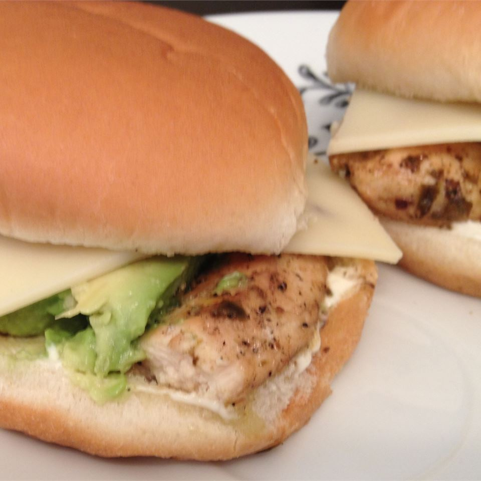

chicken burger

Description
In a small bowl, combine sliced avocado and lemon juice. Add water to cover; set aside.
Preheat an outdoor grill for high heat and lightly oil grate.Heat butter in a large heavy
skillet over medium-high heat. Saute the onions until browned and caramelized; set aside.
Season the chicken with salt and pepper. Place on grill, and cook until no longer pink
and juices run clear, about 5 minutes on each side. Place buns on grill just long enoug
to toast them.
Spread buns with mayonnaise to taste, then layer with chicken, caramelized onion,
provolone and avocado.
Ingredients
- 1 ripe avocado, sliced
- 1 tablespoon lemon juice
- 1 tablespoon butter
- 1 large Vidalia onions, sliced into rings
- 4 breast half, bone and skin removed (blank)s boneless, skinless chicken breast halves
- salt and pepper to taste
- 4 roll (blank)s buns
- 4 tablespoons mayonnaise
- 4 slices provolone cheese
Steps
- 1 ripe avocado, sliced
- 1 tablespoon lemon juice
- 1 tablespoon butter
- 1 large Vidalia onions, sliced into rings
- 4 breast half, bone and skin removed (blank)s boneless, skinless chicken breast halves
- salt and pepper to taste
- 4 roll (blank)s buns
- 4 tablespoons mayonnaise
- 4 slices provolone cheese